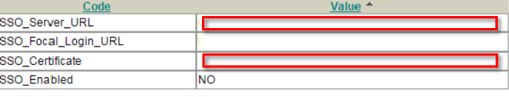

Sign in to your SpiraLinks account.
In the Set up SAML section, copy and paste the following into the Value column for the SSO_Server_URL field, as shown below.
Sign into the Okta Admin dashboard to generate this value.

Copy the following and paste it into the Value column for the SSO_Certificate field, as shown above.
Sign into the Okta Admin dashboard to generate this value.